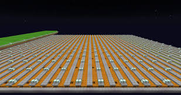

March 25, 2025
Mastering Pumpkin Farming in Skyblock
The Basics of Pumpkin Farming
Pumpkin farming is one of the most profitable ways to earn **XP** and **coins** in Hypixel Skyblock. The key to success is understanding the mechanics of planting, growing, and harvesting pumpkins.
Efficient Pumpkin Farming Techniques
The most important aspect of pumpkin farming is maximizing crop yield. This can be done by creating an efficient farm layout, utilizing **Farmer's Boots**, **Crop Harvesting Tools**, and ensuring you have the **best farming accessories** like the **Pumpkin Dicer**.
Best Strategies for Maximizing Profits
To maximize your earnings, always participate in **Jacob's Farming Contests**. The **Pumpkin Contest** rewards you with valuable prizes like **Jacob's Tickets** and a chance for rare drops. Also, using **Farming Fortune** enchantments and tools will increase the chances of getting more pumpkins from each harvest.